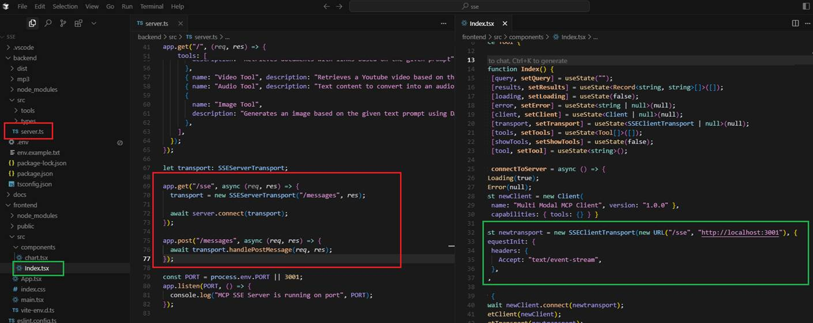

Multi-Modal MCP Server/Client with SSE Transport Layer
Video Link: https://youtu.be/yP5qI0JJqNM
GitHub Repository: https://github.com/Ashot72/Multi-Modal-MCP-Server-Client
MCP - Model Context Protocol is an open standard that simplifies how large language models (LLMs) access and interact with external data, tools, and services.
It essentially acts as a universal interface, enabling AI applications to connect to various systems and resources in a standardized way.
Figure 1
MCP utilizes a client-server model. Clients, embedded in LLMs, send requests to MCP servers, which handle the actual interaction with external systems.
MCP simplifies the development of AI agents and workflows by providing a unified approach to connecting LLMs with various data sources, tools, and APIs.
In the app, we utilize three clients:
- MCP Inspector - a developer tool for testing and debugging MCP servers.
- React MCP client - a custom-built frontend written in React.
- Cursor AI Tool Editor - integrates with MCP servers and allows invoking tools directly from the editor interface.
The Multi-Modal MCP server provides five tools:
- Audio Tool - converts text into spoken audio using Google Text-to-Speech.
- Chart Tool - generates JSON chart data from user prompts and renders it with Chart.js.
- Document Tool - uses Tavily Search to retrieve relevant documents and links.
- Image Tool - leverages DALL·E to create images based on natural language descriptions.
- Video Tool - uses the YouTube Data API to return video IDs, allowing video embedding in the UI.
The Model Context Protocol (MCP) defines three main transport types: stdio, streamable HTTP, and SSE.
- stdio:
This transport uses standard input and output streams for communication. It's typically used for local integrations and command-line tools.
- Streamable HTTP:
This transport uses HTTP POST requests for sending messages from the client to the server and optional Server-Sent Events (SSE) for streaming responses from the server to the client.
It's designed for both local and remote connections and is becoming the standard transport for remote MCP clients.
- SSE (Server-Sent Events):
It uses a single HTTP endpoint for sending requests and a separate endpoint for receiving streamed responses.

Figure 2
In the app we use SSE.
GET /see - establishes the SSE connection form the client to the server.
POST /messages - receives messages from the client (e.g., tool invocations, chat input)
Figure 3
This is the MCP Inspector.
Figure 4
The first MCP client is the MCP Inspector, a developer tool for testing and debugging MCP servers.
Figure 5
The second client is the React MCP client, Aa custom-built frontend written in React.
Figure 6
The third client is the Cursor AI Tool Editor, which can act as an MCP client and invoke tools from an MCP server. What I aimed to do was generate the page and render tool responses with zero coding.
I specified a prompt to generate the initial index.html file with starter code.

Figure 7
I created a project-level Cursor rule with some instructions.
Figure 8
Connected it to our MCP server.
Figure 9
When we specify a prompt such as "Recent Microsoft Document AI", it triggers the corresponding MCP server tool - in this case, the Document Tool. After that, it generates HTML
code and inserts it into the source code based on the rule we specified.
Figure 10
By calling all the tools, we will see index.html rendered with all tool outputs.
Figure 11
The .env file in the backend app specifies several keys:
TAVILY_API_KEY - required for the Document Tool to perform real-time searches. This key is free.
YOUTUBE_DATA_API_KEY - required for the Video Tool to access the YouTube Data API, which allows applications to interact with YouTube programmatically. This key is also free.
OPENAI_API_KEY - required for both the Image Tool and the Chart Tool. The key is not free.